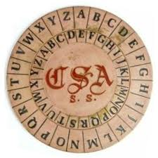
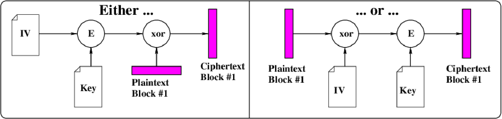
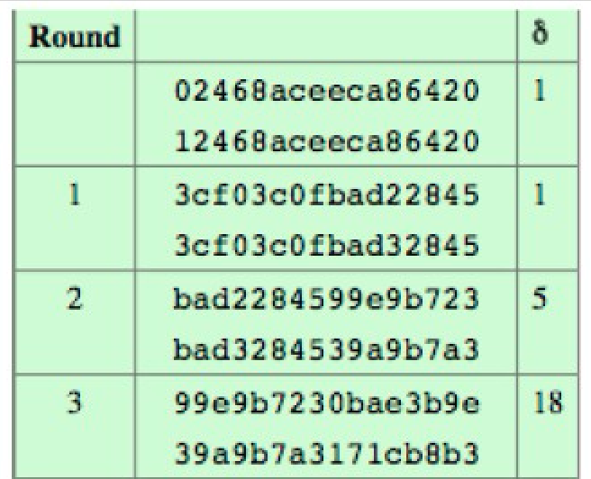
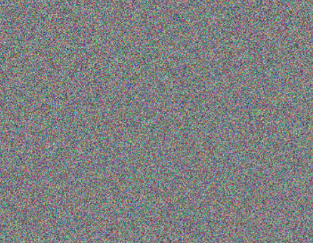
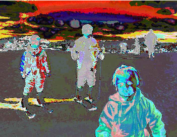

DADA2026:4-1
Defence against the Dark Arts
Fourth topic - Cryptography 1 [H4]
July, 2026
Examples of rotation ciphers


Used in the American Civil war, they can be used as simple rotation cipher. The Confederate one has a keyspace of 26, and a useful keyspace of only 25.
Example of a polyalphabetic substitution cipher

Used by the US army from 1922 to 1942. It had 25 disks, each containing a random sequence of the letters A-Z around the outside.
US M209 Rotor machine [X]

This is Hugh’s working, smelly, M209 machine. More material at [X] above. .
Cryptanalysis

An attacker may know nothing about the system, or may have some information, or abilities to encrypt or decrypt sample texts. Each ability leads to different techniques for attack:
- Ciphertext only:
-
The adversary has a collection of ciphertext c.
- Known plaintext:
-
The adversary has a collection of plaintext m and corresponding ciphertext c.
- Chosen plaintext:
-
The adversary has temporary access to an encryption black box. They can choose a plaintext m and obtain the corresponding ciphertext c from the black box.
- Chosen ciphertext:
-
reverse of chosen plaintext attack.
- Chosen text:
-
select plaintext or ciphertext to en/decrypt
Block/stream cipher

A stream cipher decrypts or encrypts the data stream one bit at a time.
A block cipher decrypts or encrypts the data stream a block (of bits) at a time. In DES it is 64 bits, in AES 128 bits. The keysize is also some fixed size.
Block cipher concepts
One technique is to add a single 1 bit, followed by enough 0 bits to fill out the block (if it ends on a block boundary, a whole padding block will be added).

The IV does not need to be secret, but should be unpredictable, and not reused with the same key. A (previously) common practice of re-using the last ciphertext block of a message as the IV for the next message is insecure.

“Modes” of operation (for AES/DES/...)


Here are three modes, ECB, which encrypts a block at a time, and CFB and CBC, which chain in an initial vector, so even if each plaintext block is the same, the ciphertext will be different. The US government recommends not using the Electronic Codebook mode.
Avalanche - A “goodness” measure for crypto

Assume we had a crypto system, and two plaintext messages p, and p' with only one bit different. As the encryption process does each round, we want it to quickly have many bits different.
Q: How many bits are different?



DES - Data Encryption Standard
DES was first proposed by IBM (1974) using 128 bit keys. The Security was reduced by NSA to a 56 bit key. The 56 bit key generates 16 48-bit subkeys, which each control a round.

Each of the 16 stages (rounds) of DES uses a Feistel structure which encrypts a 64 bit value into another 64 bit value using the 48 bit subkey. There is a substitution on the left data half, and then a permutation - swapping halves. Avalanche analysis shows good divergence after 5 rounds.